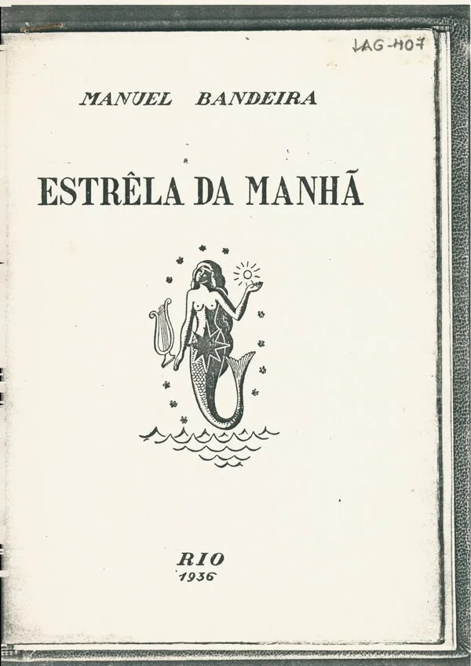

Manuel Bandeira
Biografia
Manuel Bandeira foi um dos mais importantes poetas brasileiros e uma figura fundamental do Modernismo. Nascido em Recife em 1886, mudou-se ainda jovem para o Rio de Janeiro e iniciou estudos de engenharia, mas precisou abandoná-los devido à tuberculose.
Durante anos buscou tratamento no Brasil e na Suíça; apesar de os médicos acreditarem que teria pouco tempo de vida, viveu até os 82 anos e produziu uma obra marcante para a literatura brasileira. Publicou seu primeiro livro, “A cinza das horas”, em 1917, seguido por Carnaval, que já demonstrava maior liberdade formal. Neste livro estava o famoso poema “Os sapos”, uma crítica ao Parnasianismo que se tornou símbolo do espírito modernista. Embora não tenha participado diretamente da Semana de Arte Moderna, colaborou com revistas modernistas e foi considerado por Mário de Andrade o “São João Batista do Modernismo”, por ter antecipado muitas das características do movimento.
Além de poeta, foi professor, cronista, crítico literário, crítico de arte e historiador da literatura. Lecionou no Colégio Pedro II e na Faculdade Nacional de Filosofia, além de atuar na preservação do patrimônio histórico nacional. Entre suas contribuições como estudioso destacam-se obras sobre a poesia brasileira, antologias de poetas e o livro de memórias Itinerário de Pasárgada, no qual relata sua trajetória e suas reflexões sobre a criação poética.
Ele ingressou na Academia Brasileira de Letras em 1940, ocupando a Cadeira 24. Sua morte, em 1968, foi sentida em todo o país, pois era visto como um dos maiores e mais respeitados poetas brasileiros.
Obras
O principal de sua poesia:
— A Estrela da Manhã: Uma coletânea de poemas de Manuel Bandeira. Apesar de ser mais conservadora que “A Libertinagem”, elementos de subversão e modernistas apareciam sob o rondó, a balada e a cantiga, como é visível em “O Rondó dos Cavalinhos”, onde a linguagem popular soma-se à elegância da composição francesa.

— A Libertinagem: Obra escrita durante a fase heroica do modernismo; tenta alçar a simplicidade poética por meio de uma linguagem coloquial. Sua técnica de versos livres é integrante do conjunto, sendo seu âmbito de temas profundamente variado, atingindo desde a melancolia, perpassando pela ironia e incluindo o contexto do dia a dia, assim como uma observação das paisagens brasileiras e muitos outros assuntos.
Textos escolhidos
“Vou-me embora pra Pasárgada
Lá sou amigo do rei
Lá tenho a mulher que eu quero
Na cama que escolherei
Vou-me embora pra Pasárgada
Aqui eu não sou feliz
Lá a existência é uma aventura
De tal modo inconsequente
Que Joana a Louca de Espanha
Rainha e falsa demente
Vem a ser contraparente
Da nora que nunca tive
E como farei ginástica
Andarei de bicicleta
Montarei em burro brabo
Subirei no pau-de-sebo
Tomarei banhos de mar!
E quando estiver cansado
Deito na beira do rio
Mando chamar a mãe-d’água
Pra me contar as histórias
Que no tempo de eu menino
Rosa vinha me contar
Vou-me embora pra Pasárgada
Em Pasárgada tem tudo
É outra civilização
Tem um processo seguro
De impedir a concepção
Tem telefone automático
Tem alcaloide à vontade
Tem prostitutas bonitas
Para a gente namorar
E quando eu estiver mais triste
Mas triste de não ter jeito
Quando de noite me der
Vontade de me matar
— Lá sou amigo do rei —
Terei a mulher que eu quero
Na cama que escolherei
Vou-me embora pra Pasárgada”.
— Manuel Bandeira, “Libertinagem” (1930).
Referências bibliográficas
-
Academia Brasileira de Letras (ABL)
-
Enciclopédia Itaú Cultural — Manuel Bandeira
-
Brasil Escola — Manuel Bandeira
-
Toda Matéria — Manuel Bandeira
-
Biblioteca Nacional — Coleções da Seção de Manuscritos: Manuel Bandeira
-
Grupo Editorial Global — Biografia de Manuel Bandeira
-
UFSC — Uma leitura de Libertinagem, de Manuel Bandeira